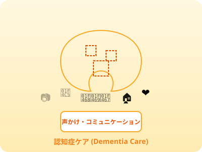

🧠 介護 · 認知症
認知症ケア
認知症ケア
Perawatan Demensia
Kosakata, gejala, BPSD, dan teknik komunikasi untuk perawatan demensia

📚 Apa itu Demensia (認知症)?
認知症(にんちしょう)=demensia adalah kondisi menurunnya fungsi kognitif (memori, orientasi, bahasa, pemikiran) yang cukup parah untuk mengganggu kehidupan sehari-hari. Di Jepang, sekitar 600 ribu orang mengidap demensia, dan angka ini terus meningkat seiring penuaan populasi.
🔑 Kosakata Dasar Demensia
📋 Empat Jenis Demensia Utama
| Jenis | Nama Jepang | Ciri Khas | Persentase |
|---|---|---|---|
| Alzheimer | アルツハイマー型認知症 | Pelupa progresif; kehilangan memori jangka pendek lebih dulu | 約67% |
| Vaskular | 血管性認知症 | Akibat stroke; gejala mendadak; berjalan tidak stabil | 約20% |
| Lewy Body | レビー小体型認知症 | Halusinasi visual; gejala Parkinson; fluktuatif | 約4% |
| Frontotemporal | 前頭側頭型認知症 | Perubahan perilaku; disinhibisi; afasia | 約1% |
🧩 BPSD — Gejala Psikologis & Perilaku
BPSD (Behavioral and Psychological Symptoms of Dementia) = 認知症の行動・心理症状。Ini berbeda dari gejala kognitif utama dan membutuhkan pendekatan khusus non-farmakologi.
| BPSD | Bahasa Jepang | Penanganan |
|---|---|---|
| Agitasi | 焦燥感・興奮(しょうそうかん・こうふん) | Tenangkan lingkungan, kurangi stimulus |
| Wandering | 徘徊(はいかい) | Dampingi, lingkungan aman, aktivitas |
| Halusinasi | 幻覚(げんかく) | Jangan tolak, ikuti alur perasaan |
| Agresi | 攻撃的行動(こうげきてきこうどう) | Cari penyebab, jaga jarak aman |
| Depresi | 抑うつ(よくうつ) | Empati, aktivitas bermakna |
| Menolak perawatan | 介護拒否(かいごきょひ) | Tunda, ubah pendekatan, tawarkan pilihan |
| Insomnia | 不眠(ふみん) | Rutinitas siang aktif, cahaya alami |
| Inkontinensia | 失禁(しっきん) | Toilet teratur, pantau pola |
💬 Teknik Komunikasi — パーソン・センタード・ケア
✅ Yang Harus Dilakukan
- 目線を合わせてゆっくり話す (Berbicara pelan sambil menyesuaikan tinggi pandangan)
- 一度に一つのことだけ伝える (Sampaikan satu hal sekaligus)
- 感情を受け止める「そうですね」「大変でしたね」 (Terima perasaan: "Iya ya", "Itu berat ya")
- 笑顔と穏やかな声のトーン (Senyum dan nada suara yang tenang)
- 過去の思い出を引き出す (Bangkitkan kenangan positif masa lalu)
❌ Yang Harus Dihindari
- 「さっき言いましたよ」などの訂正 (Koreksi seperti "Tadi sudah bilang")
- 複雑な質問や長い説明 (Pertanyaan kompleks atau penjelasan panjang)
- 急がせること (Mendesak/menyuruh cepat)
- 後ろから急に話しかける (Menyapa tiba-tiba dari belakang)
- 感情を否定する「それは違います」 (Menyangkal perasaan: "Itu salah")
📚 Kosakata Penting
💬 認知症の理解とケア
🧠 Dialog 1 — 帰宅願望
田中さん
家に帰りたいんです。主人が心配しているから。
Ingin pulang. Suami pasti khawatir.
介護士
ご主人が心配されているんですね。今日は夕食を一緒に食べてから考えましょうか。今日の夕食はお好きなサーモンですよ。
Suami khawatir ya. Makan malam bersama dulu ya. Menu malam ini salmon kesukaan Anda.
田中さん
（落ち着いてくる）そうね、まず食べましょうか。
(Mulai tenang) Iya ya, makan dulu.
💊 Dialog 2 — 服薬支援
田中さん
この薬は飲みたくないです。
Tidak mau minum obat ini.
介護士
何か気になることがありますか？
Ada yang mengganjal?
介護士
この薬は血圧を安定させるお薬です。小さいので飲みやすいですよ。お水と一緒にどうぞ。
Obat ini untuk menstabilkan tekanan darah. Kecil, mudah ditelan. Bersama air ya.
💬 Dialog Demensia
🧠 Dialog 1 — 帰宅願望への対応
介護士
田中さん、どうされましたか？
Bu Tanaka, ada apa?
田中さん
家に帰りたいんです。主人が待っています。
Saya mau pulang. Suami saya menunggu.
介護士
そうですか、ご主人が待っているんですね。今日のお夕飯、一緒に食べましょうか？食べてから考えましょう。
Begitu ya, suami menunggu. Makan malam bersama dulu ya? Setelah makan kita pikirkan lagi.
田中さん
そうですね…（落ち着いてきた）
Iya ya... (mulai tenang)
💊 Dialog 2 — 服薬拒否への対応
田中さん
その薬は飲みたくないです。
Saya tidak mau minum obat itu.
介護士
そうですか、嫌な気持ちがするんですね。何か気になることがありますか？
Begitu ya, tidak nyaman ya. Ada yang mengganjal?
介護士
この薬は血圧を安定させるものですよ。小さくて飲みやすいですよ。一緒に飲みましょうか。
Obat ini untuk menstabilkan tekanan darah. Kecil dan mudah ditelan. Minum bersama ya.
田中さん
じゃあ、一緒にいてくれますか？
Kalau begitu, temani saya?
🧠 Quiz Demensia
Skor: 0/0
📚 重要語彙 — 認知症の基礎
🔊 認知症
ninchishō
demensia
🔊 中核症状
chūkaku shōjō
gejala inti demensia
🔊 BPSD
BPSD
gejala perilaku dan psikologis
🔊 見当識
kentōshiki
orientasi (waktu/tempat/orang)
🔊 記憶障害
kioku shōgai
gangguan memori
🔊 アルツハイマー型
arutsuhaimā-gata
tipe Alzheimer
🔊 血管性認知症
kekkan-sei ninchishō
demensia vaskular
🔊 レビー小体型
rebii shōtai-gata
demensia Lewy body
🔊 前頭側頭型
zentō sokutō-gata
demensia frontotemporal
🔊 徘徊
haikai
wandering
🔊 帰宅願望
kitaku ganbō
keinginan pulang
🔊 認知症カフェ
ninchishō kafē
dementia café
🔊 ユマニチュード
yumanicchuudo
Humanitude
🔊 バリデーション
baridēshon
validation therapy
🔊 回想法
kaisō-hō
reminiscence therapy